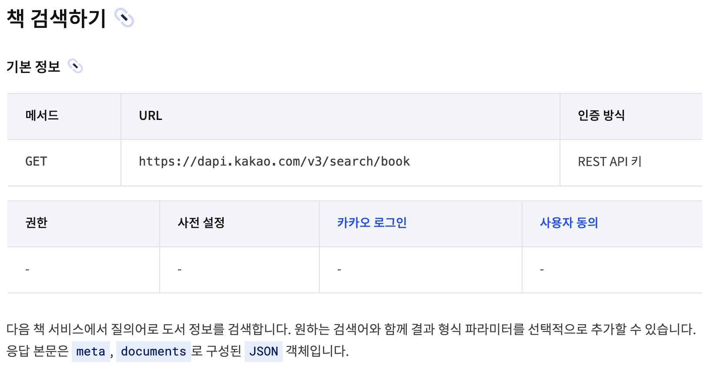
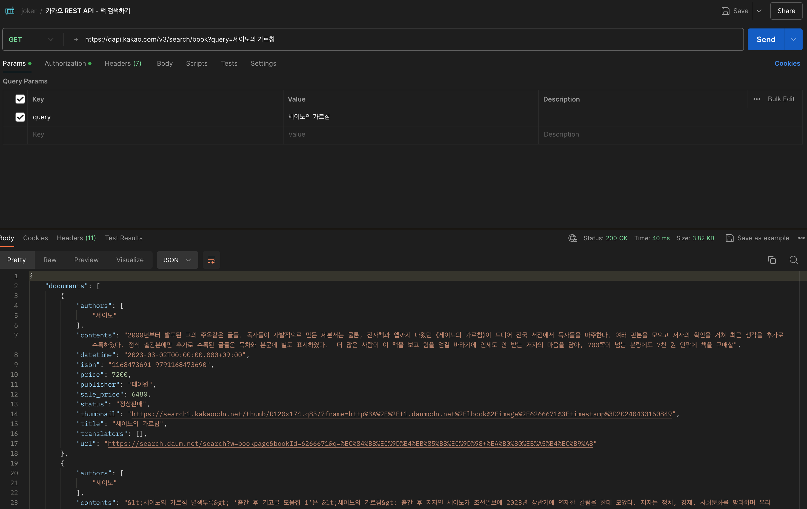
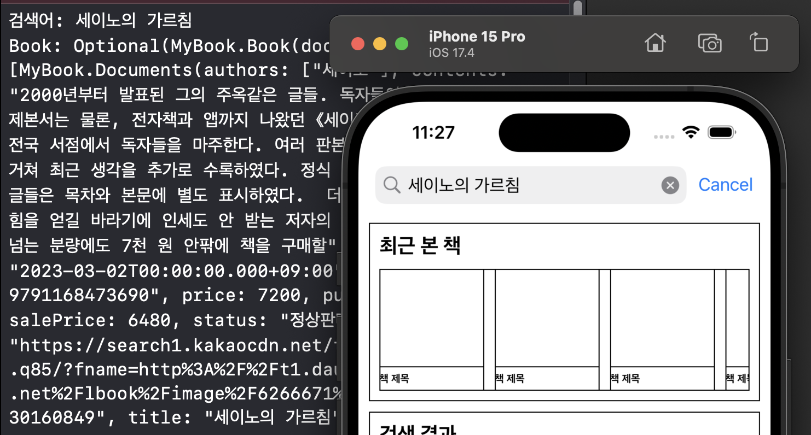
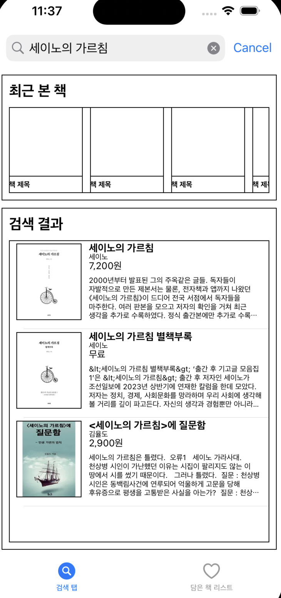
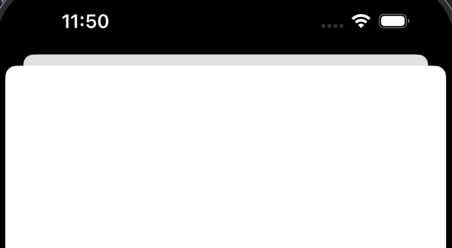

[내배캠] iOS 앱 개발 심화 개인 과제 - 책 검색 앱 만들기 3
지난이야기
- ⭐️책 검색 앱 만들기 1 보러가기⭐️
- ⭐️책 검색 앱 만들기 2 보러가기⭐️
- 지난번에 이어 카카오 api를 사용하여 책 이름으로 책을 검색하고 테이블 뷰에 보여주도록 하겠습니다.
1. 카카오 REST API 사용하기
- 카카오 책 검색하기 API를 사용하였습니다.
- 회원가입 후 Key를 발급 받을 수 있으며 과정은 생략하겠습니다. ⭐️카카오 책 검색 REST API 바로가기⭐️
- 
2. Postman으로 데이터 확인하기
- 포스트맨을 사용하여 세이노의 가르침 책을 받아오는데 성공하였습니다.
- 포스트맨 다운로드 및 사용 방법은 생략하겠습니다.
- 
3. 데이터 모델 만들기
- 포스트맨을 통해 데이터 형식을 확인하고 데이터 모델을 만들었습니다.
import Foundation
struct Book: Decodable {
var documents: [Documents]
var meta: Meta
}
struct Documents: Decodable {
var authors: [String]
var contents: String
var datetime: String
var isbn: String
var price: Int
var publisher: String
var salePrice: Int
var status: String
var thumbnail: String
var title: String
var translators: [String]
var url: String
enum CodingKeys: String, CodingKey {
case authors
case contents
case datetime
case isbn
case price
case publisher
case salePrice = "sale_price"
case status
case thumbnail
case title
case translators
case url
}
}
struct Meta: Decodable {
var isEnd: Bool
var pageableCount: Int
var totalCount: Int
enum CodingKeys: String, CodingKey {
case isEnd = "is_end"
case pageableCount = "pageable_count"
case totalCount = "total_count"
}
}
4. NetworkManager 만들기
- 지난 과제에서 싱글톤 패턴을 사용하여 네트워크 매니저를 구현했었는데요. 복습할 겸 다시 사용해보겠습니다.
- 최초 조회할때 한 번 API를 사용할 것 같은데 싱글톤으로 구현해보고 나중에 변경을 하던가 고민해보겠습니다.
class NetworkManager {
static let shared = NetworkManager()
private init() { }
func searchBook(query: String, completion: @escaping (Result<Book, Error>) -> Void) {
let url = "https://dapi.kakao.com/v3/search/book"
let apiKey = "카카오에서 받은 API 키"
// MARK: - 1. URL 객체 생성
guard let url = URL(string: "\(url)?query=\(query)") else { return }
// MARK: - 2. HTTP 요청 객체 생성
var request = URLRequest(url: url)
request.setValue(apiKey, forHTTPHeaderField: "Authorization")
// MARK: - 3. HTTP 요청 보내기
let task = URLSession.shared.dataTask(with: request) { data, response, error in
guard let httpResponse = response as? HTTPURLResponse, (200...299).contains(httpResponse.statusCode) else {
// 응답 코드가 성공 범위가 아닐 경우 처리
return
}
guard let data = data else {
// 데이터가 없을 경우 처리
return
}
do {
let decoder = JSONDecoder()
let result = try decoder.decode(Book.self, from: data)
// 파싱된 데이터(result)를 사용하여 작업
completion(.success(result))
} catch {
// 데이터 파싱 실패 시 처리
completion(.failure(error))
}
}
task.resume()
}
}
5. 조회해보기
- SearchBookViewController에서 검색어 확인을 위해 구현했던 메서드에 API 호출 후 데이터를 받아오는지 확인해보겠습니다.
- 추가된 코드만 작성하였습니다.
// MARK: - 서치바 델리게이트 프로토콜 채택
class SearchBookViewController: UIViewController {
var bookData: Book? //api를 통해 받아온 정보를 담을 객체
}
extension SearchBookViewController: UISearchBarDelegate {
// 사용자가 검색 버튼을 눌렀을 때 호출되는 메서드
func searchBarSearchButtonClicked(_ searchBar: UISearchBar) {
if let searchText = searchBar.text {
print("검색어: \(searchText)")
NetworkManager.shared.searchBook(query: searchText) { [weak self] result in
switch result {
case .success(let resultData):
//print("resultData: \(resultData)")
self?.bookData = resultData
print("Book: \(self?.bookData)")
case .failure(let error):
print("데이터를 가져오는데 실패했습니다. \(error)")
}
}
}
}
}
실행화면
- 세이노의 가르침을 조회하고 정상적으로 데이터를 받아왔습니다.
- 
6. 테이블 뷰에 추가하기
- numberOfRowsInSection 메서드의 return 값을 받아온 데이터의 수로 변경하였습니다.
- tableViewCell에서 추가한 객체에 데이터를 할당합니다. (오토레이아웃을 조금 수정하였습니다.)
// MARK: - 테이블뷰 데이터소스 프로토콜 채택 extension SearchBookViewController: UITableViewDataSource { func tableView(_ tableView: UITableView, numberOfRowsInSection section: Int) -> Int { guard let book = bookData else { return 0 } return book.documents.count } func tableView(_ tableView: UITableView, cellForRowAt indexPath: IndexPath) -> UITableViewCell { guard let cell = tableView.dequeueReusableCell(withIdentifier: SearchResultTableViewCell.identifier, for: indexPath) as? SearchResultTableViewCell else { return UITableViewCell() } //책 이미지 불러오기 if let urlString = bookData?.documents[indexPath.row].thumbnail { if let url = URL(string: urlString) { DispatchQueue.main.async { cell.bookImageView.kf.setImage(with: url) } } } cell.bookTitleLabel.text = bookData?.documents[indexPath.row].title //책 제목 //저자 let authors = bookData?.documents[indexPath.row].authors.joined(separator: ", ") cell.bookAuthorsLabel.text = authors //책 가격 if let price = bookData?.documents[indexPath.row].price { if price == 0 { cell.bookPriceLabel.text = "무료" } else { let numberFormatter: NumberFormatter = NumberFormatter() numberFormatter.numberStyle = .decimal if let formatPrice = numberFormatter.string(for: price) { cell.bookPriceLabel.text = formatPrice + "원" } } } cell.bookContentsLabel.text = bookData?.documents[indexPath.row].contents //책 소개 return cell } } - 검색 후 테이블 뷰에서 데이터가 보이지 않아 새로고침을 추가합니다.
extension SearchBookViewController: UISearchBarDelegate {
// 사용자가 검색 버튼을 눌렀을 때 호출되는 메서드
func searchBarSearchButtonClicked(_ searchBar: UISearchBar) {
if let searchText = searchBar.text {
print("검색어: \(searchText)")
NetworkManager.shared.searchBook(query: searchText) { [weak self] result in
switch result {
case .success(let resultData):
//print("resultData: \(resultData)")
self?.bookData = resultData
print("Book: \(self?.bookData)")
//검색 후 테이블 뷰 새로고침
DispatchQueue.main.async {
self?.searchResultTableView.reloadData()
}
case .failure(let error):
print("데이터를 가져오는데 실패했습니다. \(error)")
}
}
}
}
}
실행화면
- 
7. TableView Cell 선택 시 상세 페이지로 이동하기
- UIViewController를 상속받는 BookDetailViewController 파일을 만들었습니다.
-
Cell을 선택 시 BookDetailViewController 화면을 띄우도록 하겠습니다.
- BookDetailViewController 파일 수정
class BookDetailViewController: UIViewController {
override func viewDidLoad() {
super.viewDidLoad()
view.backgroundColor = .white
}
}
- present로 이동
// MARK: - 테이블뷰 델리게이트 프로토콜 채택
extension SearchBookViewController: UITableViewDelegate {
func tableView(_ tableView: UITableView, heightForRowAt indexPath: IndexPath) -> CGFloat {
return 120
}
// MARK: - tableView Cell을 선택했을때 화면 이동
func tableView(_ tableView: UITableView, didSelectRowAt indexPath: IndexPath) {
let bookDetailVC = BookDetailViewController()
present(bookDetailVC, animated: true, completion: nil)
}
}
실행화면
- 
마무리
- 카카오 책 검색 REST API를 사용하여 데이터를 받아와 테이블 뷰에 출력했습니다.